This article is just a collection of some of my favorite cat pictures. Some are cute. Some are inspirational. Some are funny, and some are “head scratchers”. I hope that it brightens up your day today.
Fat Cat
The love bond.
Hello Kitty
There’s a Japanese Show About a Samurai and the Adorable Cat He Wouldn’t Assassinate
It’s a classic Hollywood story: an assassin on a job can’t go through with it when he meets his would-be victim, then the two form an unlikely friendship against their common enemy.
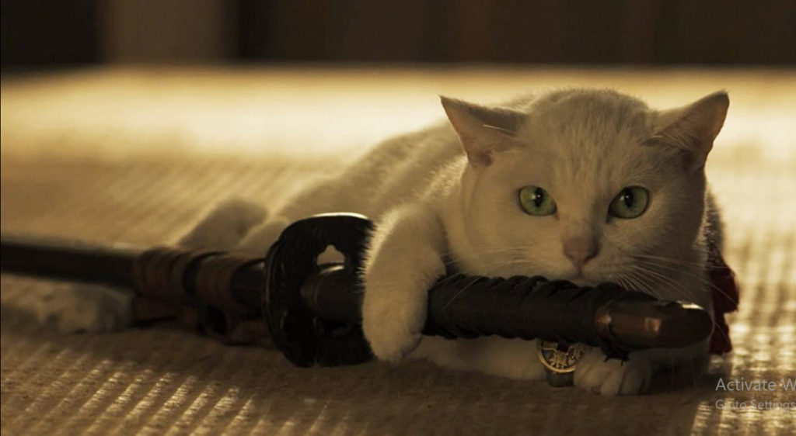
It’s a pretty reliable trope, although it can be hard finding new ways to keep it fresh. But that not a problem for one Japanese show, which had the greatest version of this story we’ve ever come across:
The amazing tale of the friendship between a samurai and the adorable cat he refused to kill.
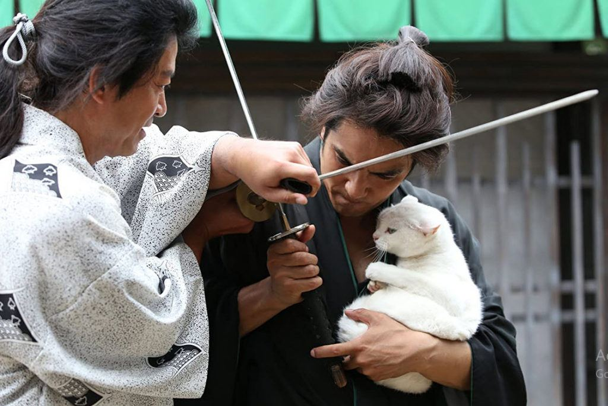
Neko zamurai (translation Samurai Cat), which we only just learned about at Reddit, was a Japanese TV mini-series that ran for two seasons from 2013 to 2015.
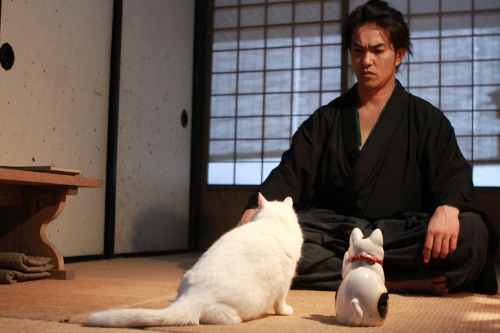
It followed Madarame Kyutaro, known as Madara the Devil, a “humorless samurai, nearly desperate for work” who agrees to kill Tomanojo, the cat “accused of possessing a man’s soul.”
One problem, though: when he actually saw the adorable little kitten, his Katana became a Kan’t-ana, so he took Tomanojo home with him.
Kitty in the snow
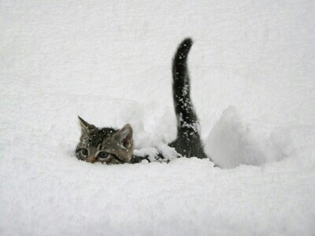
Lion Love
A fine tail
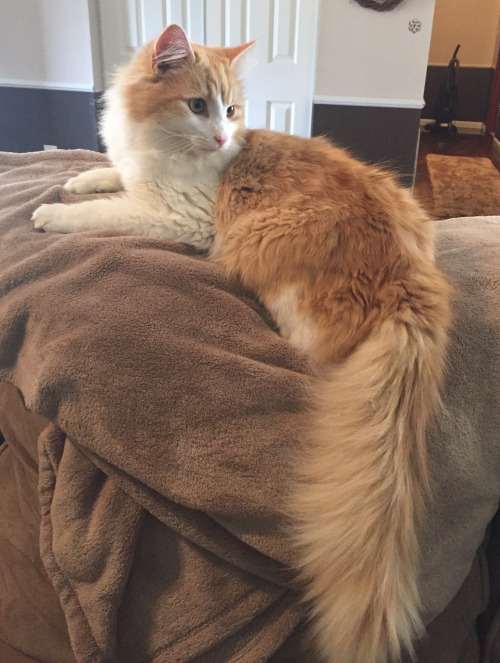
Are you alive?
Expert at game play.
Cartoon Kitty.
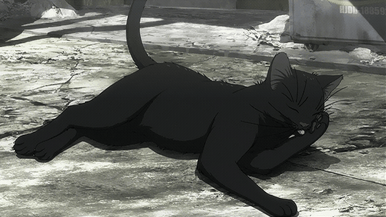
Ready to pounce.
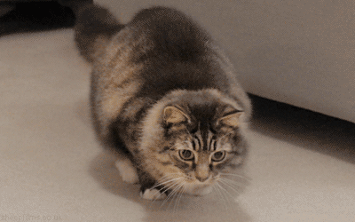
An outdoor excursion.
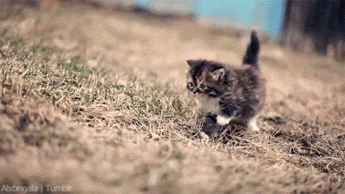
Walking Around.
Little guy.
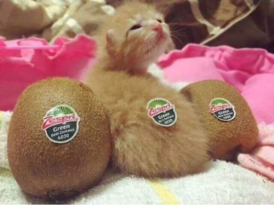
Needing snuggles.
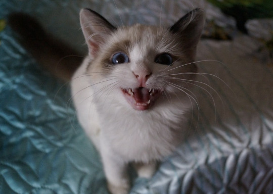
A very fine looking cat.
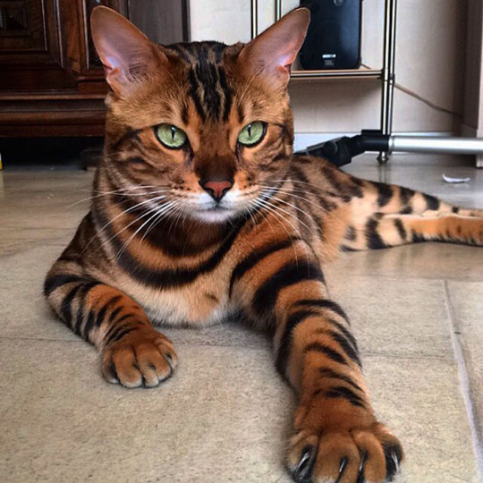
And…
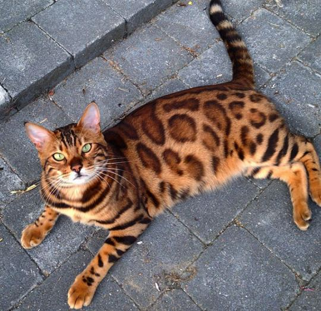
Climbing up to say hi.
Mine. Mine. Mine.
Where I keep my spare cats.
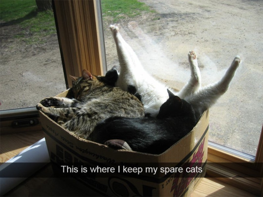
Chow Hall.
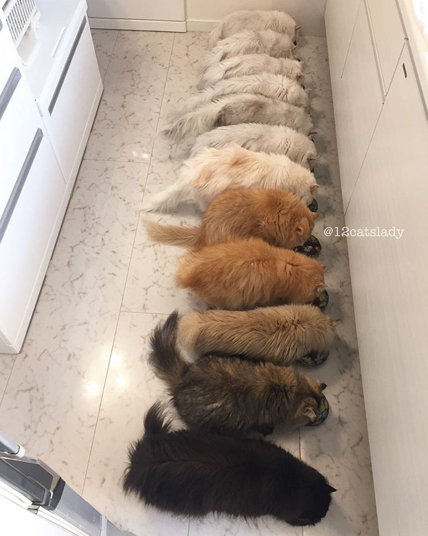
Adjacent Cattery.
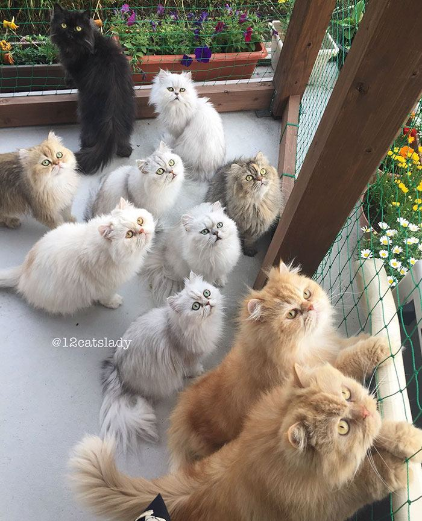
A natural hunter.
A close call.
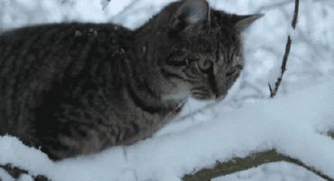
Cat ladder.
Beautiful Eyes.
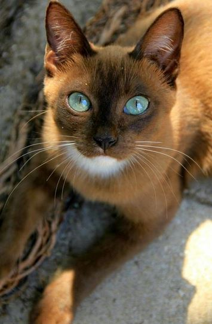
Fail!
Under the sheet fun!
My cats used to love to play this game when we made up the beds.
Who is this stranger?
Come to mommy.
Smart Cat.
Climbing the walls.
Wants to be the one and only.
Ready or not; here I come.
Service please.
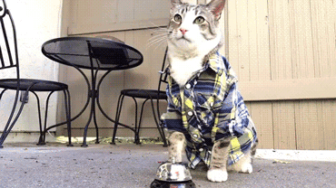
I will not be ignored.
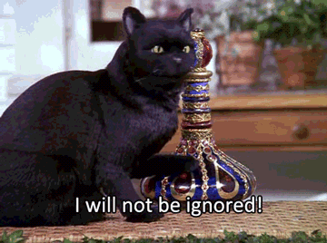
Kitten fight!
Boop!
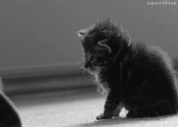
Caught up in a first person mouser!
A clean escape.
Conclusion
Cats make wonderful and funny companions. Those who visit MM might be able to see similar GIFs and pictures that resemble events that they too have experienced. This is just a fun post, and I do hope that you all enjoyed it.